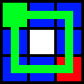
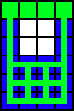
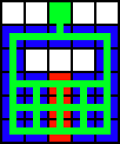
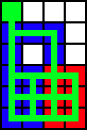
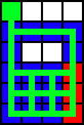
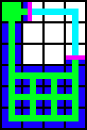

Applied Energistics 2's ME Networks require Channels to support devices which use networked storage, or other network services. Most devices such as standard cables, and machines can only support up to 8 channels. However ME Dense Cable can support up to 32 channels, the only other devices capable of transmitting 32 are P2P Tunnel and the Quantum Network Bridge
A Network without a ME Controller is considered to be Ad-Hoc, and can support up to 8 channel using devices. Once you exceed 8 devices the networks channel using devices will shutdown, you can either remove devices, or add a ME Controller.
While using Ad-Hoc networks each device will use 1 channel network wide, this is very different from how ME Controllers allocate channels based on shortest route.
Channels will consume 1⁄128 ae/t per node they transverse, this means that by adding a ME Controller for a network with 8 devices and over 96 nodes your power usage might actually decrease power consumption because it changes how channels are allocated.
When using a ME Controller Channels must route via the shortest path from the ME Controller to the device. If the path is already maxed out, some devices may not get their required channels, use colored cables, cable anchors and tunnels to your advantage to make sure your channels go in the path you desire.
Designing your layouts with channels can be tricky because of their shortest route nature, if any specific spot in your system has two possible routes, you may find yourself returning home from a mining trip to see half your devices offline. Take a look at the following example:
|  |
| Equal Length Route |
In the above image the controller is represented by the Green Block, Cables or machines by green lines. The blue square indicate which Locations only have 1 route; this is good, but there is a red block, which indicates that there is two possible routes, this can be bad, especially if your exceeding 8 channels on cable, or machines for a specific block of machines. Now that you can understand that basic issue and diagram look at these other diagrams.
|  |  |  |  |
You can see that depending on how you run your cable, you might end up with different possible outcomes in a block of machines, you can also see that using a controller you can ensure that the channels equilibrium is kept from a straight line.
In the second setup you can see that the middle line is red, however its important to remember that it only matters if that line of machines uses channels, if that line was for instance molecular assemblers, it wouldn't matter, so that could be a valid setup for building.
In the Last two you can see that you might run an extra cable into a block of machines, and it might appear to work, but you can see that it can break quite easily.
Now that you understand how this works, I'll leave you with one final piece of helpful information, if you run into a situation where you can't use a controller, and your design is imbalanced, consider using p2p tunnels, since a tunnel connection is considered a single "hop" you can get the system to have a different outcome.
|  |
| Using p2p Tunnels to adjust route lengths. |
One last important note about this, you can see that the p2p tunnel is directly on the controller, and directly on the block of machines at the bottom of the setup, this is done because the in and out tunnel are both considered "a node", so the two cable from the controller and in and out tunnel balance to create the final balanced setup.
| Last modified on 08/21/2014 11:45 AM CDT By AlgorithmX2 |